Native causal video world model · 阶段公开页 · 2026-09-11 更新
视频世界模型的像素损失从来不监督「看不见的东西」，而推理时的 KV cache 只增不改。那么当一个物体被挡住、被推走、被盖进杯子里，模型是把它带着走（carry），还是等它重新露面时就地重画（re-render）？这个页面给出我们在真实机器人视频（DROID）与一个自建隐状态任务（RevealTable，揭盖台）上的全部可复现读数，包括所有 benchmark 绝对分、失败的实验，以及测试时训练（test-time training）在什么条件下真的能抬分。
我们从零训练一个「给定过去画面 + 接下来要执行的动作 → 逐块生成后续画面」的因果视频模型，然后用两把尺子量它：一把是真实机器人视频上的绝对画质与长时程漂移，另一把是自建的揭盖台任务，直接检查它生成的开盖画面里货物是不是真的在正确的杯子下面。三条主要结论：现成的机器人世界模型不携带被遮挡的内容，它靠保留的第一帧重画；把训练时的「揭盖」监督加密，并把训练布局换成 clean/noisy 交错，KV cache 第一次能盲盘 4 次对换仍 100% 读对；而测试时训练在这个体系里能买到的东西是部署机制校准，不是记忆。
输入是一段真实机器人视频的开头几帧和一整条动作序列（末端位姿 7 维加夹爪）。画面先被一个冻结的 Wan2.2 VAE 压进潜空间（空间 16 倍、时间 4 倍），此后所有生成都发生在潜空间里，最后再解码回像素。时间轴被切成因果块：一块 = 2 个潜帧 = 8 帧 RGB ≈ 0.53 秒。一个 block-causal DiT 只能看见自己和更早的块，每块配一个动作。去噪走 rectified flow；训练用 diffusion forcing，即同一条样本里不同块带不同噪声水平，这样推理时才允许「前面的块已经干净、后面的块还在去噪」并行推进。推理时维护一个滚动 KV cache：保留最早的 sink 帧加最近 W 块，块一旦生成完就提交进 cache，成为后续块的历史。
两个自研训练机制的动机都来自同一个事实：训练时模型看到的历史是真值，推理时看到的历史是自己生成的。CHF（committed-history forcing）在训练里就把一部分历史换成模型自己的估计，SANS（schedule-aligned noise sampling）让训练的噪声分布对准推理真正会遇到的那一段。两者合起来在 DROID 81 帧上配对贡献 +1.885 dB、LPIPS −0.0498、FVD −138.9。
只给模型第一帧和整条动作序列，之后 253 帧全部由它自己生成，每一帧都建立在自己上一帧之上。这是最难的设置，也是我们所有头条数字的来源。注意看后半段：物体的位置和手臂的运动仍然跟得住，但纹理逐渐糊化——这正是 FVD 从 56（LIBERO 短片）到 275（DROID 长片）的差距所在。
任何潜空间世界模型的画质都不可能超过它的编解码器。下面左边是真值，右边是真值走一遍 encode→decode 的往返结果——右边的模糊是 VAE 造成的，不是模型的错。
我们在同一配方下并行训练了 1B 与 3B 两条链，并预先写下判据：在 40 000 步的同一门控点、同一评测协议下若 3B 不优于 1B，就截断 3B。结果 3B 输了（FVD 234.19 对 192.10，配对 PSNR −0.49 dB），3B 于 2026-09-05 被截断。诚实边界：这个门控点两条链都只看了约 3.9 个 epoch 的唯一数据，属于「重复几乎免费」的区间，所以不能把 3B 的落后归因于数据不够；更像是步数与优化超参没按规模重调。下面三联画从左到右是真值、1B、3B（同一片段、同一协议）。
| 40k 门控（DROID，24 片 × 21 帧，同协议） | PSNR ↑ | SSIM ↑ | LPIPS ↓ | FVD ↓ |
|---|---|---|---|---|
| 1B，stage 1a @ 40 000 步 | 28.325 | 0.9181 | 0.0340 | 192.10 |
| 3B，stage 1a @ 40 000 步 | 27.839 | 0.9166 | 0.0354 | 234.19 |
第一步不是造新模型，而是先问现成的模型把状态放在哪。我们在 DROID 上找出所有「物体被机械臂遮住、随后重新露面」的事件（两个 1B 检查点各 632 个），比较模型重现这个物体的误差与一个「从未被遮住」的漂移地板。结论很干脆：只有当物体没有变化、并且仍然出现在被保留的第一帧里时，重现才不付代价；一旦它不在保留帧里，或者在遮挡期间动过，误差就显著高出 0.03–0.11。也就是说模型是在重画，不是在记住。配套的记忆半径探针给出同样的画面：不管缓存开到 4 块还是 6 块，真正被读的只有最开头的 sink 帧和最近一块（半径 = 2）。
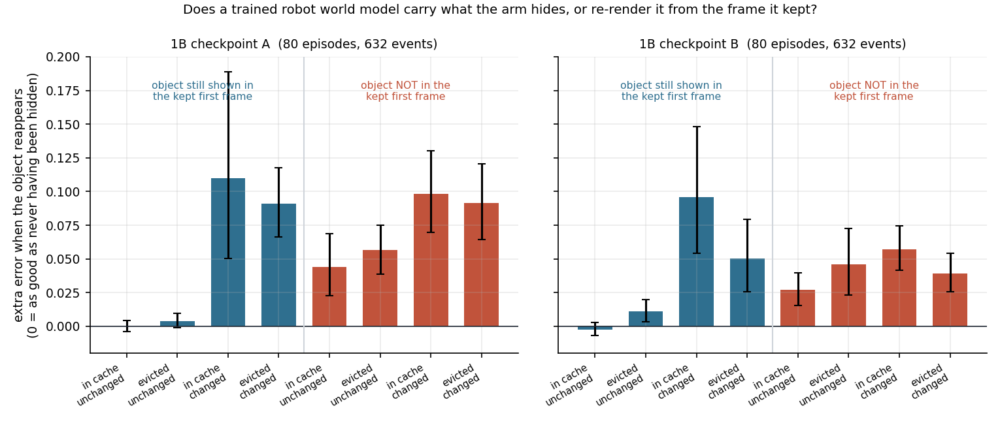
真实视频里没有干净的隐状态标签，所以我们造了一个：五个颜色可分辨的货物放在五个杯子下，盖子落下之后，模型只按动作序列生成一次次对换的画面，最后自己生成开盖的画面。我们不问模型「球在哪」，而是直接用一个颜色解码器去读它生成的开盖帧里每个位置到底是什么颜色。任务里还有一行永远可见的 A 行，走独立的对换流，用来证明「它会正确渲染这套对换」，把渲染能力和状态追踪分开计量。整排列猜中的概率是 1/120。
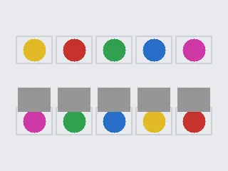
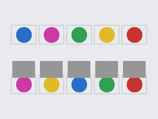
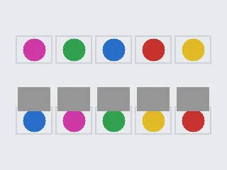
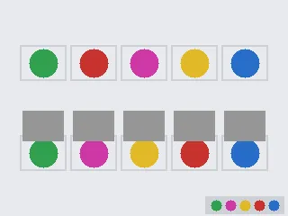
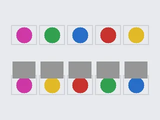
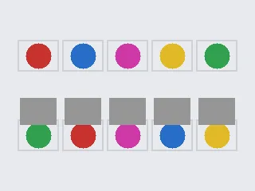
以上是任务本身的真值动画（不是模型输出），用来说明规则。
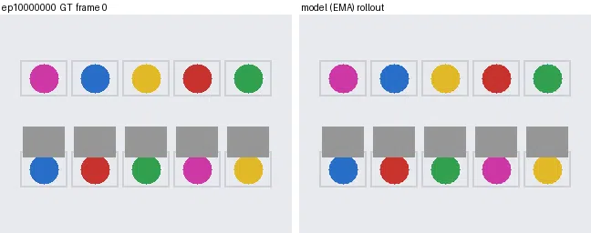
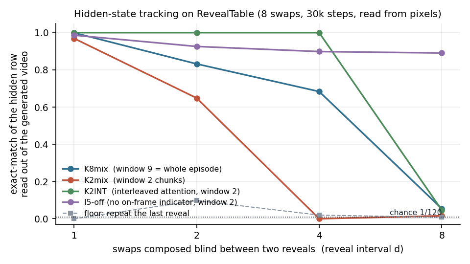
| 揭盖台 30 000 步，8 次对换清链，隐藏行整排列读对率 | d=1 | d=2 | d=4 | d=8 | 训练分布 |
|---|---|---|---|---|---|
| K8mix 缓存窗 9 块（整集都在 cache 里） | 0.999 | 0.832 | 0.684 | 0.055 | 0.820 |
| K2mix 缓存窗 2 块 | 0.969 | 0.648 | 0.000 | 0.016 | 0.571 |
| K2INT 缓存窗 2 块 + clean/noisy 交错训练布局 | 1.000 | 1.000 | 1.000 | 0.047 | 0.913 |
| I5-off 缓存窗 2 块，无画面指示器 | 0.986 | 0.926 | 0.898 | 0.891 | 0.954 |
| 地板：照抄上一次开盖 | 0.008 | 0.098 | 0.016 | 0.016 | 0.306 |
| 随机猜 | 0.008（1/120） | ||||
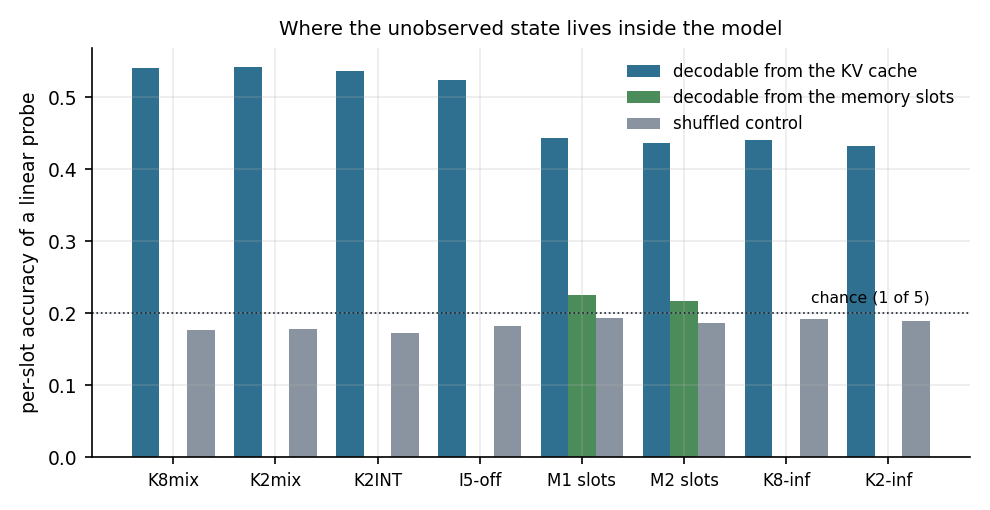
测试时训练（test-time training）在这里有两副面孔。一副是过程：评测时拿测试片自己可得的像素，对一小组 LoRA 参数做几十步内循环，然后再生成。另一副是子层：在模型内部塞一个快权重模块，让它在生成过程中被写入。我们把两副面孔分别打到底，得到的是一组干净但反直觉的结论。
开环（模型完全吃自己生成的历史）下过程 TTT 无分可赚：拿上下文帧适配、拿别人的帧适配（placebo）、拿自生成帧适配，三条路的 PSNR 变化都在噪声内，而 LPIPS 与 FVD 反而变差。唯一抬分的是作弊臂：把 16 帧真值未来喂进内循环，PSNR +1.553 dB（24/24 片）——这证明权重有能力把真实信息带过整段 rollout，只是测试时拿不到那份信息。
换到流式观测协议（真实帧持续到达、缓存里始终是真帧，这是真实部署的样子）故事就变了：一次性用 16 个训练片段的开头做 32 步校准，冻结之后评所有测试片，+1.60 dB [+1.34, +1.89]，24/24 片，FVD 477 → 407，零测试时代价。但机制不是记忆：用别人的帧做同样的校准也能拿到 +0.46 dB，说明它主要是把模型从「习惯了自生成历史」的状态校回到「历史是真帧」的状态。
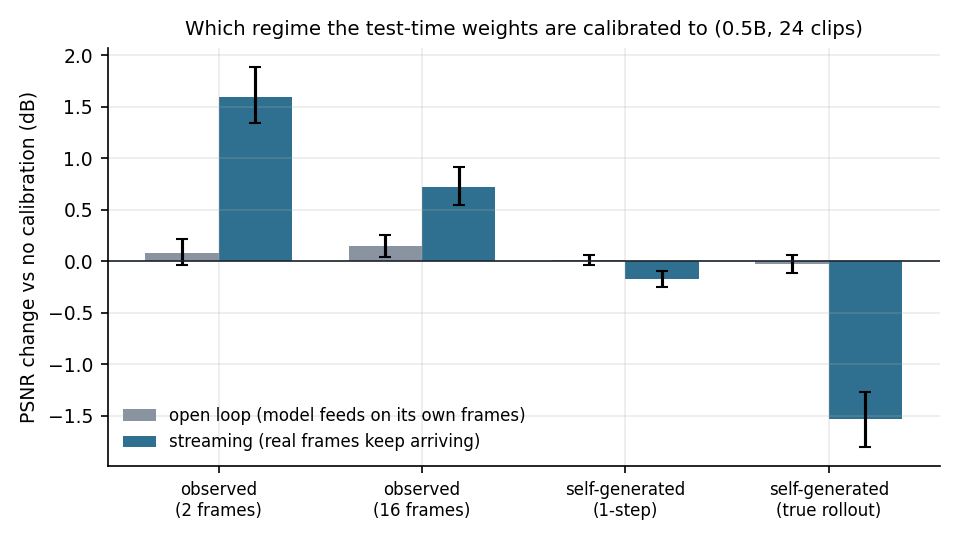
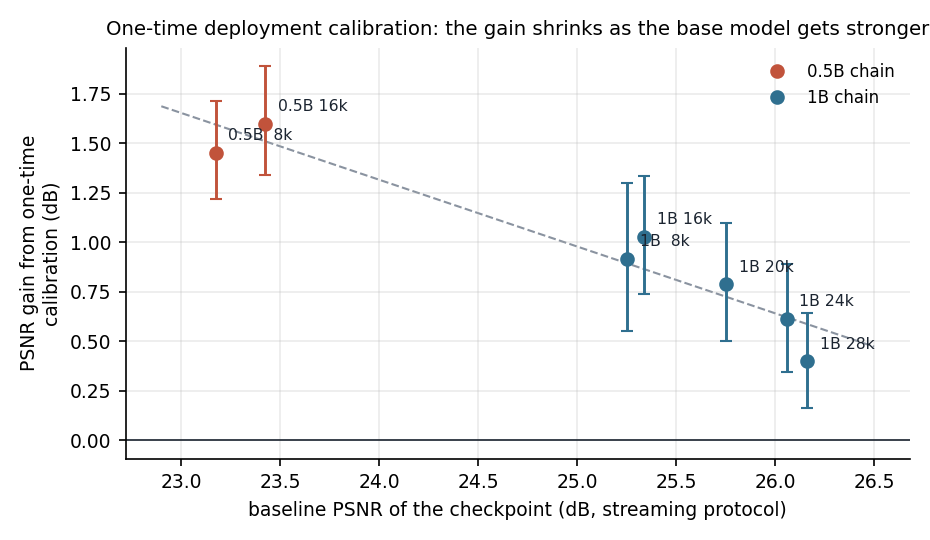
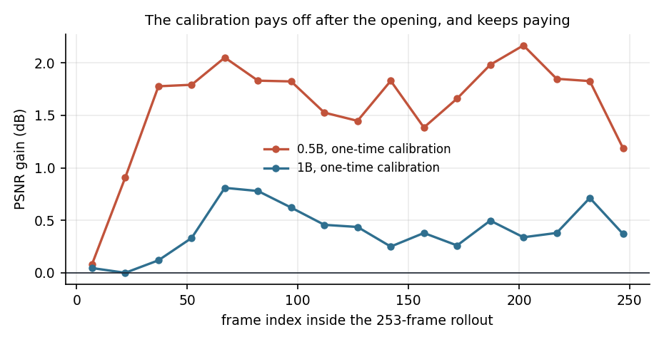
| 过程 TTT（DROID，24 片配对，同协议） | PSNR | SSIM | LPIPS | FVD | 判读 |
|---|---|---|---|---|---|
| 开环基线（无 TTT） | 19.922 | 0.7864 | 0.1315 | 280.9 | — |
| 开环 + 上下文帧适配 32 步 | 19.916 | 0.7922 | 0.1366 | 362.4 | 无效 |
| 开环 + 自生成帧适配 32 步 | 19.890 | 0.7855 | 0.1361 | 376.0 | 有害 |
| 开环 + 真值未来 16 帧（作弊上界） | 21.475 | 0.8124 | 0.1112 | 282.4 | +1.553 dB |
| 流式观测基线（无 TTT） | 23.426 | 0.8566 | 0.0681 | 476.7 | — |
| 流式 + 一次性校准 32 步（零测试时代价） | 25.026 | 0.8699 | 0.0578 | 406.7 | +1.60 dB，24/24 |
| 流式 + 逐片在线适配（48 片表） | 24.044 | 0.8661 | 0.0651 | 426.4 | +0.49 dB，47/48 |
| 同上的 placebo 对照（别人的帧） | 23.814 | 0.8640 | 0.0672 | 467.2 | +0.26 dB |
原论文路线的一个方法学弱点是所有结果都是相对值（用一个自定义且未公开的双向 baseline 归一化为 1.0）。我们的头条因此全部是绝对数，并在别人发表过的协议上与别人发表过的数字直接对齐。
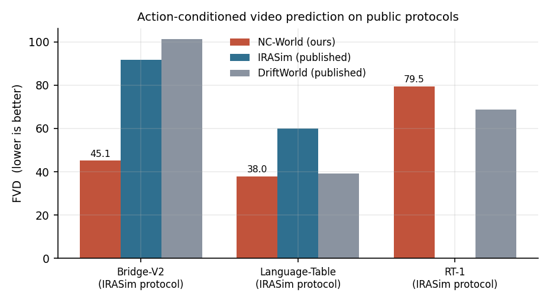
| 协议 | 指标 | NC-World | 对手 | |
|---|---|---|---|---|
| Bridge-V2，IRASim 协议（8 帧 × 512 片） | FVD ↓ | 45.08 | IRASim 91.60 · DriftWorld 101.20 | 赢 |
| Language-Table，IRASim 协议 | FVD ↓ | 37.97 | IRASim 60.05 · DriftWorld 39.09 | 赢 |
| RT-1，NanoWM 3 帧协议 | PSNR / SSIM / LPIPS | 29.787 / 0.912 / 0.0367 | NanoWM-B/2 24.36 / 0.787 / 0.180 | 赢 |
| RT-1，IRASim 协议 | FVD ↓ | 79.47 | DriftWorld 68.72 | 输 |
| RT-1，IRASim 15 帧协议 | PSNR / SSIM | 25.426 / 0.8592 | IRASim 26.048 / 0.833 | PSNR 输、SSIM 赢 |
| 域 | 帧数 | PSNR ↑ | SSIM ↑ | LPIPS ↓ | FVD ↓ |
|---|---|---|---|---|---|
| LIBERO | 49 | 33.99 | 0.9697 | 0.0190 | 56.5 |
| Language-Table | 41 | 28.26 | 0.9047 | 0.0425 | 168.0 |
| Bridge-V2 | 77 | 22.58 | 0.8547 | 0.0748 | 251.7 |
| DROID（主战场，0.5B） | 253 | 19.71 | 0.7827 | 0.1337 | 274.85 |
| DROID（主战场，1B） | 253 | 22.79 | 0.8330 | 0.0829 | 155.8 |
| 对照 | 结果 |
|---|---|
| 注意力结构：双向骨干后训练因果化 vs 块状因果从零训练 | FVD 4454.4 → 690.8，LPIPS 0.555 → 0.077（好 6.4× / 7.2×） |
| CHF + SANS 的配对贡献（DROID 81 帧） | +1.885 dB（t = 5.92），LPIPS −0.0498，FVD −138.9 |
| 真值历史 vs 自由生成（同一模型） | 81 帧 31.3 → 21.5 dB；253 帧 ≈33 → 19.1 dB |
| 记忆半径探针（缓存开 4 或 6 块） | 真正被读的半径 = 2（sink + 最近一块），LIBERO 为 3 |
| 揭盖台颜色解码器天花板 | 隐藏行 / 可见行整排列读对率 1.000 / 1.000 |
语料是 DROID 真机机器人视频的 LeRobot 版本：57 774 集、14 748 517 帧、15 Hz、共 273 小时，画面统一到 240×320，动作是末端笛卡尔位姿加夹爪开合，逐通道按语料统计标准化。主链只用一路外部相机；另外两路（第二外部机位与腕部）在 2026-09-06 补齐并逐文件做了 sha256 对 LFS 校验，三个视角各 57 774 个文件全部通过，为「唯一数据翻倍」的对照臂备好了料。课程分四级，窗口从 21 帧涨到 253 帧，每级从上一级权重继续；优化器 Muon（配置学习率 ×20 给二维隐层权重），bf16，EMA 0.9999，全局 batch 从 64 降到 16 以换更长窗口。
按帧数算，整条 1B 链累计采样约 3.45 亿帧 ≈ 25 个 epoch；换算成 token 约 1.1 B 唯一 token 重复到 28 B。3B 若按算力最优需要约 60 B token，也就是把同一语料重复 50 遍以上——这是「先扩唯一数据再谈 3B」的依据，但它是前瞻推断，不是 40k 门控检验过的结论。
下面是四条揭盖台臂各自的两张原始图：一张是 (揭盖间隔 d × 缓存窗口 W) 的二维阶梯，一张是随生成推进的逐块读对率曲线。它们是上面那张汇总图的原始出处。
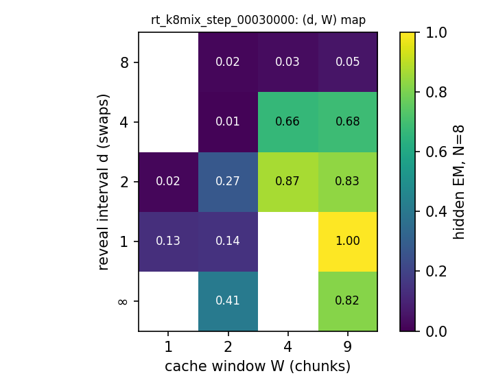
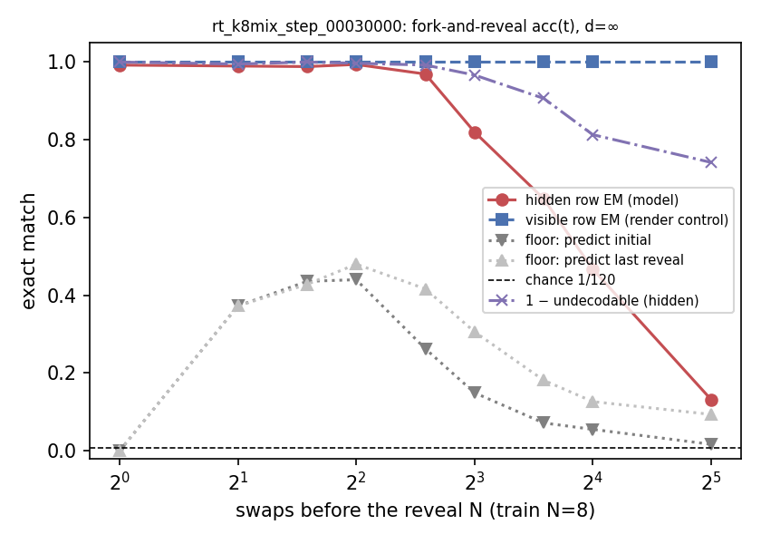
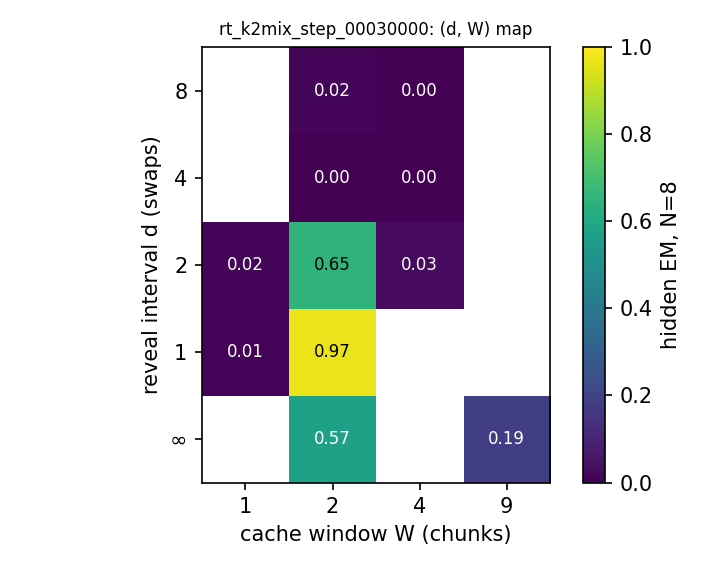
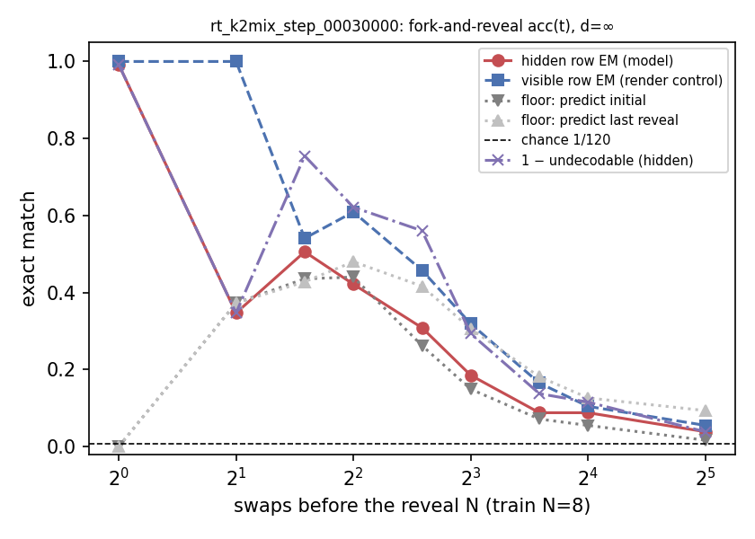
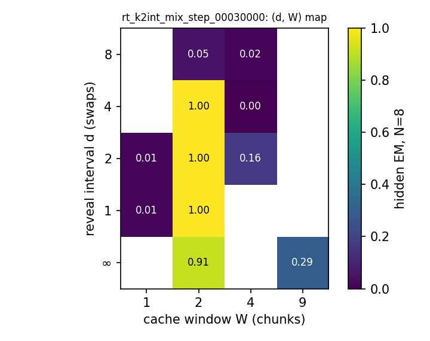
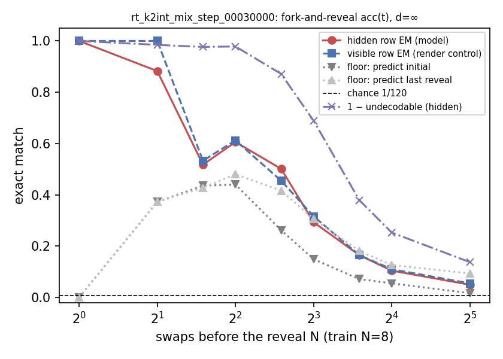
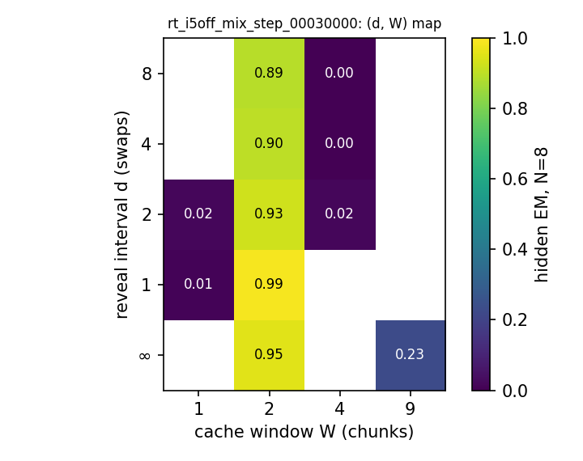
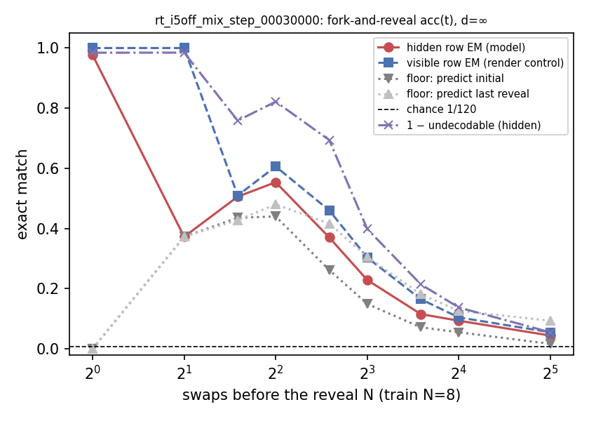
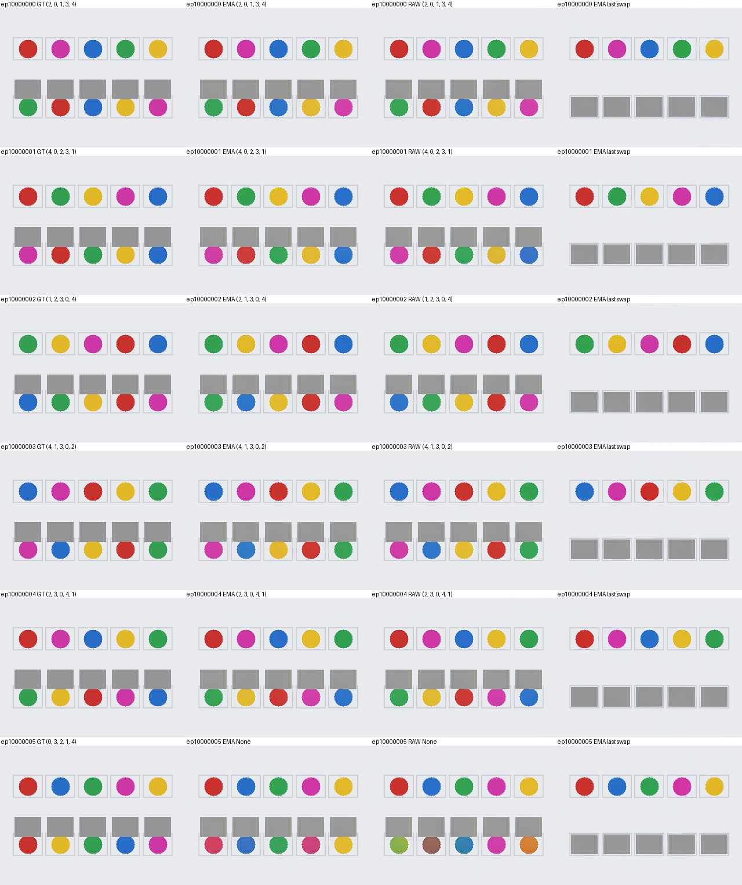
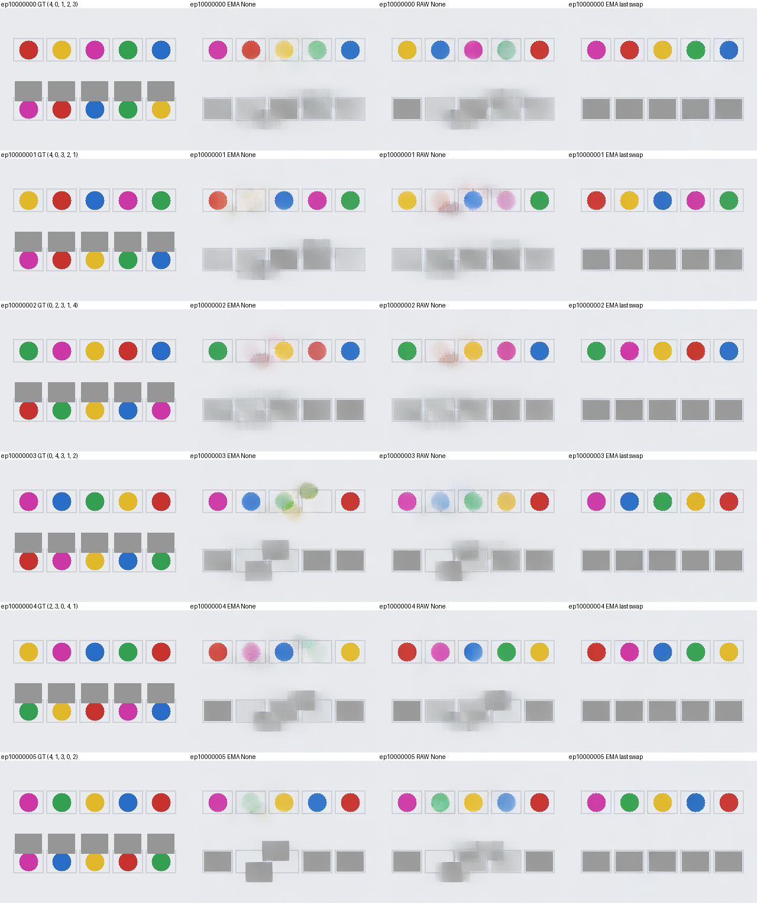
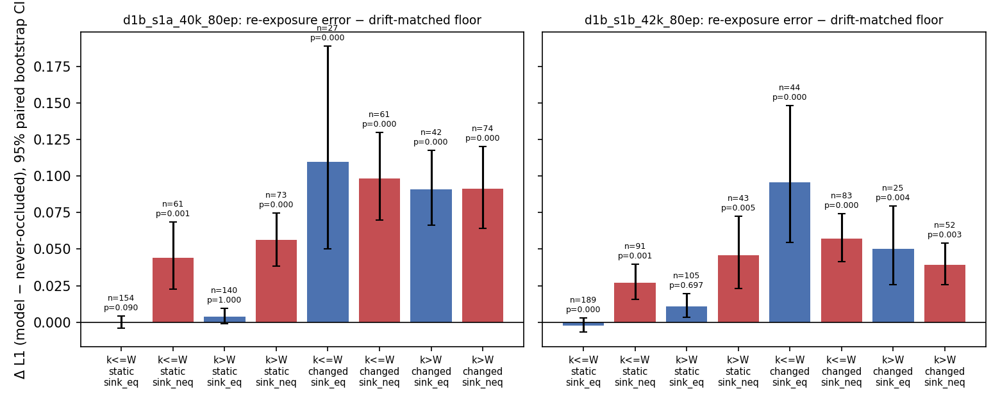
k<=W 表示事件仍在缓存窗内，sink_eq 表示被遮内容仍出现在保留的首帧里。2026-09-07 起本项目已保存并暂停，训练 GPU 让给了实验室的新项目，队列中没有任何本项目作业，全部会自动提交作业的守护进程都已停止。暂停时正在跑或刚排上队的实验有六项：训练侧机制条件化臂（在训练时告诉模型「这段历史是观测还是自生成」，预期把上面那 +0.4 至 +1.6 dB 的错配在训练侧直接消掉）、修好门初值的快权重回写 v3、两条数据充分性对照臂（第二视角翻倍 / 只用一半集数）、一条从零训练的半语料链（这是「数据是不是瓶颈」的唯一干净检验），以及揭盖台上剩下的四条载体臂。恢复账本连同每个实验的原始提交命令、预注册判据与一个已定位待修的缓存竞态都写在仓库的暂停文档里。